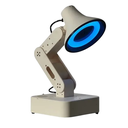
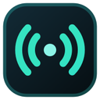
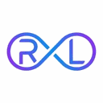

Lamp + lampOS
Lamp is Autonomous's fully assembled desktop companion robot, and lampOS is the open-source (Apache-2.0) operating system it runs. Lamp has a camera, microphones, a speaker, motors and lights; you talk to it, give it a voice and personality, and add physical and digital skills, while lampOS lets agents such as Hermes, Claude Code, Codex, OpenClaw, OpenCode and PicoClaw see, hear, speak and move through it, with a cloud or compatible local model. Lamp costs $699 and Lamp Pro, which adds CO2, particle, temperature and humidity sensing, $999.
Updated
✨ Try AgentScout's free AI image generator →Good for: controlling a computer, building voice agents
Use cases
About Lamp + lampOS
Lamp + lampOS is listed in our robotics & physical AI category and is aimed at people who want a ready-to-use product. Lamp is Autonomous's fully assembled desktop companion robot, and lampOS is the open-source (Apache-2.0) operating system it runs. Lamp has a camera, microphones, a speaker, motors and lights; you talk to it, give it a voice and personality, and add physical and digital skills, while lampOS lets agents such as Hermes, Claude Code, Codex, OpenClaw, OpenCode and PicoClaw see, hear, speak and move through it, with a cloud or compatible local model. Lamp costs $699 and Lamp Pro, which adds CO2, particle, temperature and humidity sensing, $999. Pricing, as the maker states it: Lamp $699, Lamp Pro $999 (hardware, free US shipping); lampOS is open source under Apache-2.0. Maturity: Active. We last checked the official link on 2026-11-18.
What is Lamp + lampOS?
Lamp is a fully assembled desktop companion robot from Autonomous, built as a robotic desk lamp. It has a wide-angle camera with face tracking and motion sensing, a microphone array, stereo speakers, a light ring and five position-feedback servos, so it can turn to look at you, nod, tilt and play recorded gestures. Inside are an 8-core ARM64 CPU and 6 GB of RAM. You talk to it, show it things through the camera, and give it its own name, voice and personality. Lamp Pro adds sensors for CO2, airborne particles (PM1.0 to PM10), temperature and humidity, so you can ask about the room or set an alert when readings leave a range you choose.
Lamp runs lampOS, which the GitHub repo calls the Physical AI Operating System and describes as an Android for physical AI agents. It is open source under Apache-2.0. It gives an agent eyes, ears, a voice and a body: you pick Hermes, Claude Code, Codex, OpenClaw, OpenCode or PicoClaw as the brain, connect a cloud model or a compatible local one, and the OS coordinates the hardware. Behaviors are skills, one SKILL.md per folder, installed from a Skill Store or written from a typed description in the Autonomous app, and the robot's character lives in an editable SOUL.md. Through Harness it can hand coding and research tasks to agents on a paired computer and speak the result.
Autonomous pitches three uses: enjoy it as a companion, build physical and digital skills and connect your own apps and tools (Home Assistant, calendars, your own APIs), or build paid robot experiences for shops, teams, schools, creators and events on its hardware and OS. The same OS also runs on Autonomous Intern, Hugging Face's Reachy Mini, or a robot you describe in four markdown files.
Sources: autonomous.ai/lamp, github.com/autonomous-ai/lampOS and our directory listing, checked 2026-11-18.
Who is Lamp + lampOS for?
Builders who want to give Claude Code, Codex, Hermes or another agent a physical body with a camera, voice and movement, and people who want a programmable desk companion robot they can shape themselves.
Pros and cons
Pros
- Ships fully assembled with the OS already on it; setup runs through the Autonomous app on iOS or Android.
- The OS is Apache-2.0 and also runs on Reachy Mini, Autonomous Intern or your own robot.
- You are not locked to one AI: switch between six supported agent runtimes.
Cons
- It is hardware: $699 for Lamp and $999 for Lamp Pro.
- Model inference may use remote services depending on how you configure it, per the lampOS README.
- Some camera-based skills need a supported sensing service, and voices come from supported speech services.
Setup
- In the Autonomous app (iOS or Android), tap Add robot, then Lamp.
- Pick your Wi-Fi network in the app; it joins the robot's hotspot and handles pairing.
- Say something: Lamp turns to look at you, the ring lights up and it answers.
- Install a skill from the Skill Store, or type what you want and the app writes the skill.
- Edit SOUL.md to give it a different character on the next turn.
Lamp + lampOS at a glance
- Open source: Yes (Apache-2.0)
- GitHub: autonomous-ai/lampOS · 576 stars · 86 forks (as of Nov 18, 2026)
- Status: Active: lampOS (Physical AI Operating System) repo pushed Nov 18, 2026; Lamp hardware on sale
Key features
- Five-axis robotic desk lamp with wide-angle camera, face tracking, microphone array, stereo speakers and a light ring
- Choose the agent: Hermes, Claude Code, Codex, OpenClaw, OpenCode or PicoClaw, with a cloud or compatible local model
- Open-source lampOS (Apache-2.0): skills as SKILL.md files, an editable SOUL.md personality and a Skill Store
- Harness integration to delegate coding and research tasks to agents on a paired computer and hear the result
- Physical APIs for your own scripts, services and agents; Home Assistant and custom app connections
- Lamp Pro adds CO2, particle (PM1.0 to PM10), temperature and humidity sensing
Lamp + lampOS pricing
- Lamp: $699 · Fully assembled robot with lampOS; volume pricing from $678 each for 3-4 units down to $650 for 30+
- Lamp Pro: $999 · Everything in Lamp plus CO2, particle, temperature and humidity sensors
- lampOS: $0 · Open source under Apache-2.0
Free shipping; 1-year warranty.
Source: official pricing page, checked Nov 18, 2026. Prices change; check the source before buying.
Lamp + lampOS FAQ
What is Lamp + lampOS?
Lamp is a fully assembled desktop companion robot from Autonomous, built as a robotic desk lamp. It has a wide-angle camera with face tracking and motion sensing, a microphone array, stereo speakers, a light ring and five position-feedback servos, so it can turn to look at you, nod, tilt and play recorded gestures. Inside are an 8-core ARM64 CPU and 6 GB of RAM. You talk to it, show it things through the camera, and give it its own name, voice and personality. Lamp Pro adds sensors for CO2, airborne particles (PM1.0 to PM10), temperature and humidity, so you can ask about the room or set an alert when readings leave a range you choose.
Who is Lamp + lampOS for?
Builders who want to give Claude Code, Codex, Hermes or another agent a physical body with a camera, voice and movement, and people who want a programmable desk companion robot they can shape themselves.
Is Lamp + lampOS free?
Lamp + lampOS doesn't list a free plan on its pricing page (checked Nov 18, 2026). Plans: Lamp: $699; Lamp Pro: $999; lampOS: $0.
How much does Lamp + lampOS cost?
As of Nov 18, 2026, Lamp + lampOS's official pricing page lists: Lamp: $699; Lamp Pro: $999; lampOS: $0. Free shipping; 1-year warranty.
Is Lamp + lampOS open source?
Yes. Lamp + lampOS is released under Apache-2.0, according to its GitHub repository.
Which AI agents can run on Lamp?
Hermes, Claude Code, Codex, OpenClaw, OpenCode and PicoClaw are supported, with a cloud model or a compatible local model on your own hardware.
Is lampOS open source?
Yes. The Physical AI Operating System repo (autonomous-ai/lampOS) is Apache-2.0 and runs on Lamp, Autonomous Intern, Reachy Mini or your own robot.
What does Lamp Pro add?
Room sensing: CO2, airborne particles from PM1.0 to PM10, temperature and humidity, which skills can turn into spoken alerts or light cues.
What are the pros and cons of Lamp + lampOS?
Pros: Ships fully assembled with the OS already on it; setup runs through the Autonomous app on iOS or Android., The OS is Apache-2.0 and also runs on Reachy Mini, Autonomous Intern or your own robot., You are not locked to one AI: switch between six supported agent runtimes. Cons: It is hardware: $699 for Lamp and $999 for Lamp Pro., Model inference may use remote services depending on how you configure it, per the lampOS README., Some camera-based skills need a supported sensing service, and voices come from supported speech services.
How do I set up Lamp + lampOS?
1. In the Autonomous app (iOS or Android), tap Add robot, then Lamp. 2. Pick your Wi-Fi network in the app; it joins the robot's hotspot and handles pairing. 3. Say something: Lamp turns to look at you, the ring lights up and it answers. 4. Install a skill from the Skill Store, or type what you want and the app writes the skill. 5. Edit SOUL.md to give it a different character on the next turn.
What are alternatives to Lamp + lampOS?
Similar tools include RuView, Open Reality, Telekinesis Agentic Skill Library, Viam, IoT DC3 and RPent.
Lamp + lampOS ratings and reviews
Be the first to rate Lamp + lampOS: tap 1 to 5 stars below. A written review is optional.
Lamp + lampOS alternatives
Other robotics & physical AI tools in our directory. See all robotics & physical AI tools →

RuView
RuView is an MIT-licensed sensing system that turns ordinary WiFi signals into spatial awareness without cameras or wearables: it detects people, tracks movement and estimates breathing and heart rate room by room, even through walls and in the dark. It runs on low-cost ESP32 hardware, exposes presence and vitals to Home Assistant, Apple Home, Google Home and Alexa through MQTT, HAP or Matter, and ships an AI toolkit and trained models for building your own sensing apps.
Open Reality
Turns a handheld phone video into a persistent, queryable 3D scene and exposes it to Claude Code, Codex or Cursor through an MCP server: agents can measure distances and angles, plan paths through scanned free space and export LeRobot, GR00T, Isaac Sim or MuJoCo training data. BSD-2-Clause, self-hostable or hosted.
Telekinesis Agentic Skill Library
Python library of 250+ perception, vision and robotics skills plus a Physical AI agent that turns natural-language prompts into reviewable robot code.
Viam
Software platform for building and operating robots and smart machines.
IoT DC3
IoT DC3 is an open-source industrial IoT runtime for physical AI, connecting devices to agent workflows

RPent
RPent is agentic infrastructure for the physical world, connecting language agents to embodied systems